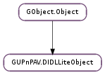

| Subclasses: | GUPnPAV.DIDLLiteContainer, GUPnPAV.DIDLLiteItem |
|---|
| Name | Type | Flags | Description |
|---|---|---|---|
| album | str | r/w | The album of this object. |
| album-art | str | r/w | The URI to album art of this object. |
| artist | str | r/w | The artist of this object. |
| author | str | r/w | The author of this object. |
| creator | str | r/w | The creator of this object. |
| date | str | r/w | The date of this object. |
| dc-namespace | int | r/w/c | Pointer to the Dublin Core XML namespace registered with the XML document containing this object. |
| description | str | r/w | The description of this object. |
| dlna-managed | GUPnPAV.OCMFlags | r/w | The ‘dlna:dlnaManaged’ attribute |
| dlna-namespace | int | r/w/c | Pointer to the DLNA metadata namespace registered with the XML document containing this object. |
| genre | str | r/w | The genre of this object. |
| id | str | r/w | The ID of this object. |
| parent-id | str | r/w | The ID of the parent container of this object. |
| restricted | bool | r/w | Whether this object is restricted. |
| title | str | r/w | The title of this object. |
| track-number | int | r/w | The original track number of this object. |
| update-id | int | r/w | Update ID of this object. |
| upnp-class | str | r/w | The UPnP class of this object. |
| upnp-namespace | int | r/w/c | Pointer to the UPnP XML namespace registered with the XML document containing this object. |
| write-status | str | r/w | The write status of this object. |
| xml-doc | GUPnP.XMLDoc | w/c | The reference to XML document containing this object. |
| xml-node | int | r/w/c | The pointer to object node in XML document. |
None
| Name | Type | Access |
|---|---|---|
| parent | GObject.Object | r |
Bases: GObject.Object
| Returns: | A new GUPnPAV.DIDLLiteContributor object. Unref after usage. |
|---|---|
| Return type: | GUPnPAV.DIDLLiteContributor |
Add a new Artist node to the object and return the associated GUPnPAV.DIDLLiteContributor object.
| Returns: | A new GUPnPAV.DIDLLiteContributor object. Unref after usage. |
|---|---|
| Return type: | GUPnPAV.DIDLLiteContributor |
Add a new author node to the object and return the associated GUPnPAV.DIDLLiteContributor object.
| Returns: | A new GUPnPAV.DIDLLiteContributor object. Unref after usage. |
|---|---|
| Return type: | GUPnPAV.DIDLLiteContributor |
Add a new creator node to the object and return the associated GUPnPAV.DIDLLiteContributor object.
| Returns: | A new GUPnPAV.DIDLLiteDescriptor object. Unref after usage. |
|---|---|
| Return type: | GUPnPAV.DIDLLiteDescriptor |
Creates a new descriptor, attaches it to object and returns it.
| Returns: | A new GUPnPAV.DIDLLiteResource object. Unref after usage. |
|---|---|
| Return type: | GUPnPAV.DIDLLiteResource |
Creates a new resource, attaches it to object and returns it.
| Parameters: | |
|---|---|
| Returns: | Result of operation. |
| Return type: |
Updates object by applying new_fragments in places of current_fragments. For current_size and new_size -1 can be passed when respectively current_fragments and new_fragments are None terminated.
| Returns: | The URI to album art of the object, or None. |
|---|---|
| Return type: | str |
Get the URI to album art of the object.
| Returns: | A DIDL-Lite XML fragment string, or None. GLib.free after usage. |
|---|---|
| Return type: | str |
Creates a string representation of the DIDL-Lite XML fragment related to the object album.
| Returns: | The artist of the object, or None. |
|---|---|
| Return type: | str |
Get the artist of the object. If role is not None, it is set to the role of the artist if available.
| Returns: | The list of artists belonging to object, or None. GLib.List.free the returned list after usage and unref each object in it. |
|---|---|
| Return type: | [GUPnPAV.DIDLLiteContributor] |
Get the artists of the object.
| Returns: | A DIDL-Lite XML fragment string, or None. GLib.free after usage. |
|---|---|
| Return type: | str |
Creates a string representation of the DIDL-Lite XML fragments related to the object artists.
| Returns: | The list of authors belonging to object, or None. GLib.List.free the returned list after usage and unref each object in it. |
|---|---|
| Return type: | [GUPnPAV.DIDLLiteContributor] |
Get the authors of the object.
| Parameters: | |
|---|---|
| Returns: | The resource belonging to object that is comaptible with any of the protocols specified in sink_protocol_info, or None. Unref after usage. |
| Return type: |
Use this function to get a resource from the object that is compatible with any of the protocols specified in the sink_protocol_info. The value of sink_protocol_info will typically be acquired from ‘Sink’ argument of ‘GetProtocolInfo’ action or ‘SinkProtocolInfo’ state-variable of a ConnectionManager service.
If lenient is True, the first resource in the list is returned instead of None if none of resources and protocols are found to be compatible.
| Returns: | The creator of the object, or None. |
|---|---|
| Return type: | str |
Get the creator of the object.
| Returns: | The list of creators belonging to object, or None. GLib.List.free the returned list after usage and unref each object in it. |
|---|---|
| Return type: | [GUPnPAV.DIDLLiteContributor] |
Get the creators of the object.
| Returns: | A DIDL-Lite XML fragment string, or None. GLib.free after usage. |
|---|---|
| Return type: | str |
Creates a string representation of the DIDL-Lite XML fragment related to the object date.
| Returns: | The pointer to DublinCore namespace in XML document. |
|---|---|
| Return type: | libxml2.NsPtr |
Get the pointer to the DublinCore namespace registered with the XML document containing this object.
| Returns: | The description of the object, or None. |
|---|---|
| Return type: | str |
Get the description of the object.
| Returns: | The list of descriptors belonging to object, or None. GLib.List.free the returned list after usage and unref each object in it. |
|---|---|
| Return type: | [GUPnPAV.DIDLLiteDescriptor] |
Get the descriptors of the object.
| Returns: | The ‘dlna:dlnaManaged’ attribute of the object. |
|---|---|
| Return type: | GUPnPAV.OCMFlags |
Get the ‘dlna:dlnaManaged’ attribute of the object.
| Returns: | The pointer to DLNA namespace in XML document. |
|---|---|
| Return type: | libxml2.NsPtr |
Get the pointer to the DLNA metadata namespace registered with the XML document containing this object.
| Returns: | The ID of parent of the object, or None. |
|---|---|
| Return type: | str |
Get the ID of the parent of the object.
| Parameters: | name (str) – name of the properties |
|---|---|
| Returns: | The list of property nodes by the name property_name belonging to object, or None. GLib.List.free the returned list after usage but do not modify the contents. |
| Return type: | [libxml2.Node] |
Use this function to retreive property nodes by name.
| Returns: | The list of resources belonging to object, or None. GLib.List.free the returned list after usage and unref each resource in it. |
|---|---|
| Return type: | [GUPnPAV.DIDLLiteResource] |
Use this function to retreive resources from the object.
| Returns: | True if object is restricted. |
|---|---|
| Return type: | bool |
Whether the object is restricted or not.
| Returns: | A DIDL-Lite XML fragment string, or None. GLib.free after usage. |
|---|---|
| Return type: | str |
Creates a string representation of the DIDL-Lite XML fragment related to the object title.
| Returns: | The original track number of the object, or -1. |
|---|---|
| Return type: | int |
Get the original track number of the object.
| Returns: | A DIDL-Lite XML fragment string, or None. GLib.free after usage. |
|---|---|
| Return type: | str |
Creates a string representation of the DIDL-Lite XML fragment related to the object track number.
| Returns: | The update ID of the object. |
|---|---|
| Return type: | int |
Get the update ID of the object.
| Returns: | The class of object, or None. |
|---|---|
| Return type: | str |
Get the UPnP class of the object.
| Returns: | A DIDL-Lite XML fragment string, or None. GLib.free after usage. |
|---|---|
| Return type: | str |
Creates a string representation of the DIDL-Lite XML fragment related to the object UPnP class.
| Returns: | The pointer to UPnP namespace in XML document. |
|---|---|
| Return type: | libxml2.NsPtr |
Get the pointer to the UPnP namespace registered with the XML document.
| Returns: | The write status of the object, or None. |
|---|---|
| Return type: | str |
Get the write status of the object.
| Returns: | The pointer to object node in XML document. |
|---|---|
| Return type: | libxml2.Node |
Get the pointer to object node in XML document.
| Returns: | XML representation of this object as string. |
|---|---|
| Return type: | str |
Get the representation of this object as an XML string.
| Parameters: | album_art (str) – The URI of album art |
|---|
Set the URI to album art of the object to album_art.
| Parameters: | author (str) – The Author |
|---|
Set the Author of the object to author.
| Parameters: | creator (str) – The creator |
|---|
Set the creator of the object to creator.
| Parameters: | description (str) – The description string |
|---|
Set the description of the object to description.
| Parameters: | dlna_managed (GUPnPAV.OCMFlags) – The GUPnPAV.OCMFlags. |
|---|
Set the ‘dlna:dlnaManaged’ attribute of the object to dlna_managed.
| Parameters: | parent_id (str) – The parent ID |
|---|
Set the ID of the parent of the object to parent_id.
| Parameters: | restricted (bool) – The restricted status |
|---|
Set the restricted status of object to restricted.
| Parameters: | track_number (int) – The original track number |
|---|
Set the original track number of the object to track_number.
| Parameters: | upnp_class (str) – The UPnP class as string. |
|---|
Set the UPnP class of the object to upnp_class.
| Parameters: | write_status (str) – The write status string |
|---|
Set the write status of the object to write_status.
Unset the artists properties of the object.
Unset the update ID property of the object.